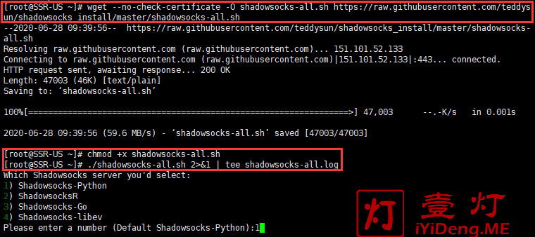

本文记录如何在云服务器中（Linux和Window系统）搭建VPN服务端来进行科学上网。
CentOS系统
Shadowsocks配置服务端
-
首选购买一个云服务器，推荐使用腾讯云的轻量级服务器，并且安装CentOS系统的实例。
-
系统默认应该已经装好wget命令，如果没有，运行以下命令安装
1
2yum -y install wget #CentOS
sudo apt-get install wget #Debian/Ubuntu -
运行以下一键脚本：
1
2
3wget --no-check-certificate -O shadowsocks-all.sh https://raw.githubusercontent.com/teddysun/shadowsocks_install/master/shadowsocks-all.sh
chmod +x shadowsocks-all.sh
./shadowsocks-all.sh 2>&1 | tee shadowsocks-all.log安装途中如果报错不能下载github中的shadowsocks源代码，可以自行尝试下载
1
wget https://github.com/shadowsocks/shadowsocks/archive/master.zip
如果后续报错无法解压
shadowsocks-master.zip,可以改变源代码zip文件名1
mv master.zip shadowsocks-master.zip
-
将以上命令粘贴到 Xshell 窗口，回车执行代码，然后会提示有以下4种安装选项，分别是“1) Shadowsocks-Python”、“2) ShadowsocksR”、“3) Shadowsocks-Go”、“4) Shadowsocks-libev”。如果我们选择第2个就是搭建SSR服务器了，我们这里选第1个，搭建Shadowsocks/SS服务器。如下图所示：
 -
我这里以安装第1个“Shadowsocks-Python”为例演示，输入数字“1”后回车，然后进入Shadowsocks服务器的参数配置选项，依次为“服务器连接密码”、“服务器端口”、“数据加密方式”（图中红杠和箭头标识的内容仅为演示，请根据你自己的需求输入即可）。其中，我这里建议你选择chacha20相关的加密方式（因为这些新加密方式的抗封锁效果更好）。如下图所示：
-
当以上参数选项都输入完毕后，敲击回车键。然后系统会提示“Press any key to start…or Press Ctrl+C to cancel“，即按任意键继续。当我们按任意键之后，系统会进入安装Shadowsocks服务的过程，稍等片刻即可完成。安装Shadowsocks服务成功完成后，如下图所示：
如上图所示，其中各项参数释义如下：
Your Server IP :你的服务器 IP 地址；
Your Server Port :你的服务器端口；
Your Password :你的连接密码；
Your Encryption Method:你的加密方式；
Your QR Code:你的SS链接；
Your QR Code has been saved as a PNG file path:你的SS链接二维码图片的存放位置。 -
开启防火墙的端口。具体端口号要和之前开的服务器端口相同。修改位置见下：
至此，你已经成功搭建Shadowsocks/SS服务器，现在就可以使用了。 -
其他命令:
-
卸载方法
若已安装多个版本，则卸载时也需多次运行（每次卸载1种），请使用root用户登录，执行以下命令：1
./shadowsocks-all.sh uninstall
-
脚本控制命令
脚本后面的参数含义：启动，停止，重启，查看状态。1
2
3
4
5
6
7
8
9
10
11Shadowsocks-Python 版：
/etc/init.d/shadowsocks-python start | stop | restart | status
ShadowsocksR 版：
/etc/init.d/shadowsocks-r start | stop | restart | status
Shadowsocks-Go 版：
/etc/init.d/shadowsocks-go start | stop | restart | status
Shadowsocks-libev 版：
/etc/init.d/shadowsocks-libev start | stop | restart | status -
默认配置文件
1
2
3
4
5
6
7
8
9
10
11Shadowsocks-Python 版：
/etc/shadowsocks-python/config.json
ShadowsocksR 版：
/etc/shadowsocks-r/config.json
Shadowsocks-Go 版：
/etc/shadowsocks-go/config.json
Shadowsocks-libev 版：
/etc/shadowsocks-libev/config.json
-
一键安装并开启BBR加速
一键安装BBR加速脚本，执行如下命令：
1 | cd /usr/src && wget -N --no-check-certificate "https://raw.githubusercontent.com/chiakge/Linux-NetSpeed/master/tcp.sh" && chmod +x tcp.sh && ./tcp.sh |
执行以上安装命令后，如下图所示：
我这里选择“2”，“安装 BBRplus版内核”加速。在安装过程中，可能会出现如下提示，用右方向键选“
安装完成后会提示重启服务器，这时候输入字母“y”，回车后，重启服务器。当服务器启动后，我们再次执行安装命令./tcp.sh，选择“7”启用“使用BBRplus版加速”。至此，BBR Plus 加速模块安装并启用完成。
理论上安装完加速脚本之后运行速度应该有所提高。实际上楼主在shadowrocket上面测试延迟，安装加速脚本前后并未有明显变化。
Windows系统
Shadowsocks配置服务端
-
首选购买一个云服务器，推荐使用腾讯云的轻量级服务器，并且安装Windows12系统的实例。
-
下载安装nodejs。下载地址：https://nodejs.org/en/ ,下载LTS长期支持版本，然后安装NodeJS，直接下一步。
-
安装shadowsocks。
打开Node.js command prompt，此为nodejs的命令端，直接在Windows里面搜索就可以找到。输入命令
npm install -g shadowsocks安装shadowsocks. -
因为shadowsocks所在的文件夹是隐藏文件夹，所以要开启显示隐藏文件。点击“这台电脑”-> “查看”，勾选“隐藏的项目”即可。如下图所示：
-
进入node.js安装目录
C:\Users\Administrator\AppData\Roaming\npm\node_modules\shadowsocks，找到config.json后更改为如下形式保存。如果找不到安装目录的话，可以直接在Node.js command prompt命令段输入ssserver，第一栏就会出现对应的路径。1
2
3
4
5
6
7
8
9{
"server":"0.0.0.0",#服务器IP
"server_port":13416, #要使用的服务器端口号，事先确认下端口号是否使用过
"local_address":"127.0.0.1", #本地监听地址 默认不改
"local_port":1080, #代理端口号，一般都默认1080
"password":"barfoo!", #更改为你的密码
"timeout":600,
"method":"aes-256-cfb" #建议aes-256-cfb就好
}如果将server设成公网IP地址的话会报错，改为
0.0.0.0即可解决问题。 -
启动shadowsocks。通过Node.js command prompt输入
ssserver启动。显示如下图的话即为安装成功
-
以防被屏蔽，在服务器的防火墙栏添加ssserver对应的端口。
ios手机客户端配置
- 需要下载Shadowrocket app到苹果手机。
- 按照服务端的信息输入IP地址，端口，密码，加密方式。具体如下：
- global routing 选择proxy，这样上网产生的所有流量都会走服务器流量。
- 选择对应的服务器，可以点击Connectivity Test 来测试服务器的延迟。如果开始使用VPN的话，需要点击第一栏的按钮，连接VPN：